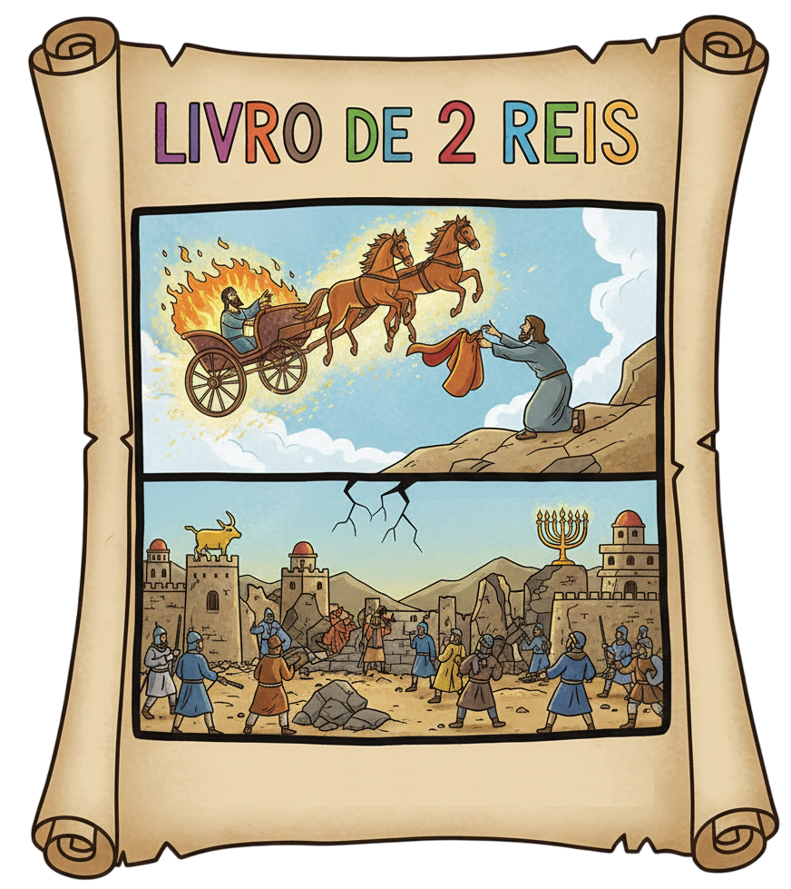
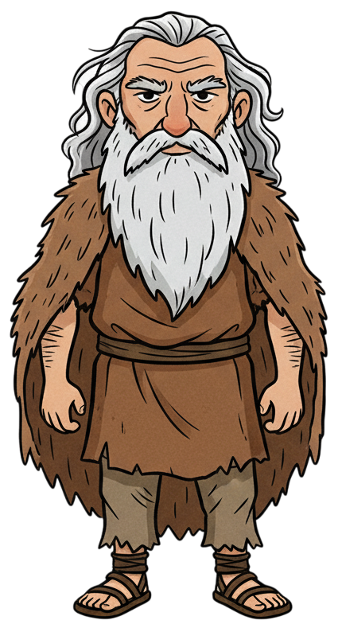
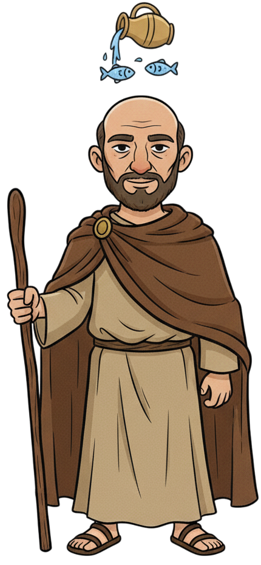
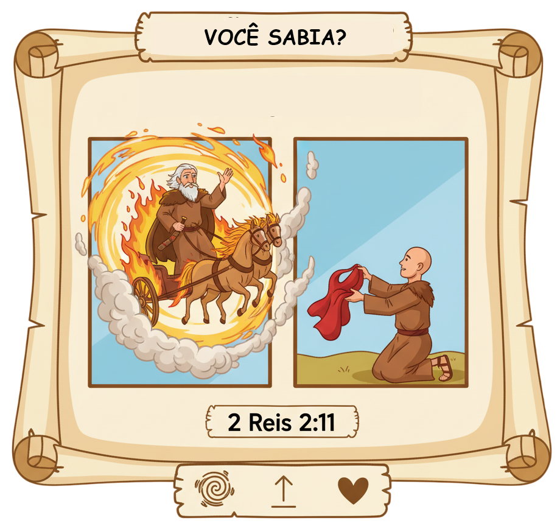

Profetas, Milagres e a Queda dos Reinos — Um Resumo Visual para Crianças
Quando Elias foi arrebatado ao céu em um carro de fogo, seu manto caiu para Eliseu. Esse manto era símbolo da missão de profeta. Eliseu pediu o dobro do espírito de Elias — e Deus honrou esse pedido com o dobro dos milagres!
Namã era general, homem poderoso — e leproso. Quando o profeta Eliseu disse "vá lavar-se 7 vezes no Jordão", ele ficou furioso. O rio era simples demais para um homem importante. Seus servos o convenceram a tentar — e ele foi curado! O orgulho quase custou sua saúde.
Israel e Judá tiveram reis bons e ruins, mas no fim a maioria abandonou Deus para adorar ídolos. Deus avisou várias vezes pelos profetas — mas o povo não ouviu. Resultado: Israel caiu para a Assíria, e Judá para a Babilônia. O exílio foi o resultado de gerações de escolhas erradas.
"Se o profeta te pedisse alguma coisa difícil, não a farias? Quanto mais quando te diz: Lava-te e ficarás limpo?"
— 2 Reis 5:13
Namã quase perdeu sua cura por achar que o método era simples demais para um general importante. Seus servos o salvaram com uma pergunta sábia. Às vezes Deus pede coisas simples — e o orgulho nos impede de obedecer!
A obediência simples vale mais que grandes planos complicados!
O orgulho impede bênçãos que a humildade facilmente recebe!
Confie no caminho de Deus mesmo quando parece simples demais!

O profeta de fogo que abriu 2 Reis com o espetáculo mais impressionante da Bíblia: foi arrebatado ao céu vivo, num carro puxado por cavalos de fogo! Um dos únicos dois homens a nunca morrer — o outro é Enoque.

O sucessor de Elias que pediu o dobro do espírito — e recebeu! Fez 16 milagres (o dobro dos 8 de Elias): multiplicou óleo, ressuscitou uma criança, curou a lepra de Namã, fez um machado flutuar e muito mais.
General sírio poderoso, mas leproso. Uma criada israelita escrava lhe indicou o profeta Eliseu. O general orgulhoso quase recusou a cura por achar o remédio simples demais — mas humilhou-se, mergulhou 7 vezes e foi curado!
Elias e Eliseu caminhavam juntos quando um carro e cavalos de fogo desceram e separaram os dois. Elias subiu no redemoinho. Seu manto caiu. Eliseu o apanhou — e ao tocar o Jordão com ele, as águas abriram! A missão continuava.
Eliseu multiplicou o óleo de uma viúva pobre, ressuscitou o filho da sunamita, purificou um ensopado envenenado, alimentou 100 pessoas com 20 pães — e ainda sobrou — e fez um machado de ferro flutuar na água. O dobro do espírito, de fato!
Uma criança israelita escrava na casa de Namã disse: "Se ao menos meu senhor fosse ao profeta em Samaria!" — essa pequena sugestão de uma garota sem nome mudou a história do general mais poderoso da Síria. Nunca subestime quem Deus usa!
Depois de gerações de reis idólatras, Israel foi derrotado pela Assíria (722 a.C.) e Judá pela Babilônia (586 a.C.). O templo foi destruído. O povo foi levado cativo. Mas um restinho de esperança permaneceu — Deus ainda cumpriria Suas promessas.

✨ Eliseu fez o DOBRO dos milagres de Elias!
Elias realizou 8 milagres registrados. Eliseu realizou 16 — exatamente o dobro! Deus honrou literalmente o pedido de "porção dupla do espírito". E um dos milagres de Eliseu aconteceu depois que ele já estava morto (2 Rs 13:21)!
👦 Josiás tinha 8 anos quando virou rei!
O rei Josiás começou a reinar com apenas 8 anos (2 Rs 22:1). Aos 26, mandou reformar o Templo — e encontraram o Livro da Lei perdido há décadas! Uma criança liderou a maior reforma espiritual de Judá. Deus usa jovens!
✝️ João Batista veio "no espírito de Elias"!
Jesus disse que João Batista era o "Elias que havia de vir" (Mt 11:14). O anjo Gabriel anunciou que João viria "no espírito e poder de Elias" (Lc 1:17). O profeta de fogo do Antigo Testamento anunciava o precursor de Jesus!
Eliseu pediu ousadamente "o dobro do espírito". Você costuma pedir coisas grandes a Deus ou tem medo de pedir demais? O que Eliseu te ensina sobre isso?
Namã quase perdeu sua cura por orgulho. Tem alguma área da sua vida onde o orgulho pode estar impedindo Deus de agir? O que seria "mergulhar 7 vezes" para você?
Uma criada sem nome mudou o destino de Namã com uma frase. Como você pode ser essa "criada" — alguém que indica Jesus para quem está ao seu redor, mesmo sendo jovem?
Assim como Eliseu pediu ousadamente, esta semana ore pedindo mais do Espírito de Deus na sua vida. Não tenha medo de pedir grande — Deus ama quando confiamos Nele!
Identifique algo onde o orgulho está impedindo você de obedecer a Deus ou pedir desculpas a alguém. Faça o seu "mergulho no Jordão" — a coisa simples que você tem evitado!
Assim como a criada israelita indicou o caminho da cura para Namã, esta semana indique Jesus para um amigo — com uma palavra, uma mensagem, ou um convite para a igreja!
Trilho Kids | Desenvolvido com ❤️ para crianças © 2025